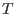
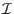
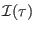
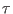
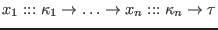
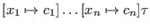
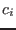
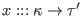

We assume the existence of a function  assigning types to literal constants. It maps integer constants to , float constants to , character constants to , and string constants to .
We also refer to a function  , such that  ``uses an oracle'' to instantiate all constructor function arguments at the beginning of  that are marked implicit; i.e., replace  with  , where the  s are inferred and does not start like  .